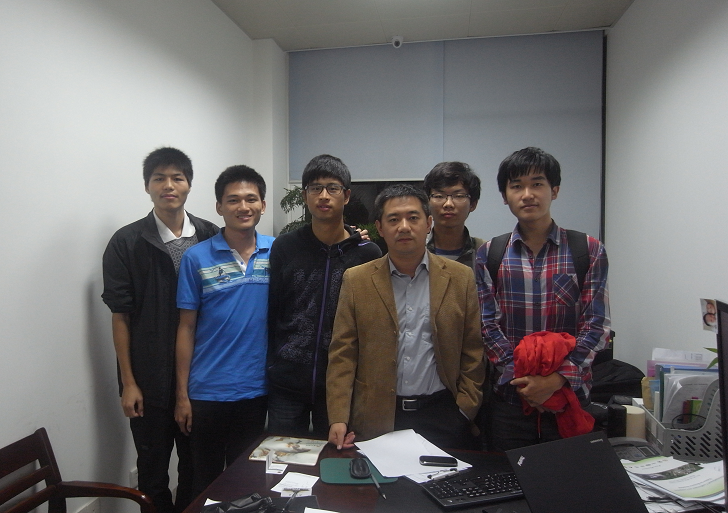

PC125
PC125团队成员均来自2011级本科计算机科学系，均具备高级语言程序设计的知识， 有较强的编程能力，有扎实的数学功底，能熟练运用英语进行交流与阅读。P C125团队的导师是王程教授，助理是杨文韬学长。 PC125所有成员均有学生会部门工作经验，不乏部门骨干精英，团队合作意识较强。成员平时热爱运动，身体素质较好。 本团队成员在平时的课程学习中经过了实验的实时操作与训练， 具有较强的动手操作能力，热衷于对计算机理论知识的应用与实践，富有敢于突破与创新的精神。 
PC125团队所依附的“遥感与空间信息技术实验室”是集聚了计算机科学、认知科学、信号与信息处理、模式识别与智能系统、 以及摄影测量与遥感等学科领域的优势力量而组建的一支多学科交叉的科研创新团队， 拥有我国首家引进的RIEGL移动与静态相结合三维激光扫描设备体系。该团队所在的实验室有优越的工作环境和充足的硬件设施，资金雄厚。 王程教授作为“遥感与空间信息技术实验室”的三个主要研究方向的带头人之一，可为我们提供学术上的权威指导。
PC125团队目前已通过网络、图书等多种渠道对于该技术所涉及的领域有所了解， 大致了解了该技术所需的知识储备，并 已开始初步的学习相关知识和进入项目组所在的实验室进行了简单的相关实践。并对今后的时间安排进行了合理的规划， 团队成员之间进行了合理的分工。
鉴于我们目前所具备的多方面条件，所以我们决定研究该项目。 我们的目标首先是制作厦门大学彩色点云三维数字校园地图， 方便其他人了解我们学校，将厦大风采展现给他人。再考虑到该技术的广大前景，可用于对于文物、建筑等的保护工作，以及交通和测绘等领域。 在项目开发过程中所研发的彩色点云编辑软件，不仅可用于我们的项目，还可为其他点云技术工作者提供方便。 最后，我们在该项目的研究过程中，发掘了个人潜能，将理论与实践完美结合，体现了当代大学生积极进取、敢于创新的精神面貌。